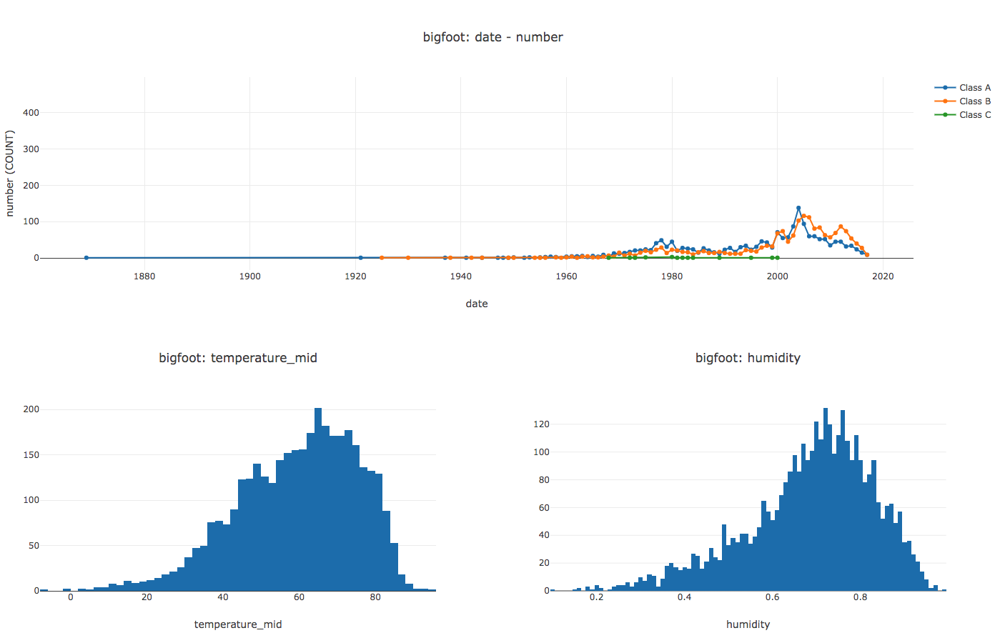

Welcome to SVL
SVL is a declarative, SQL-like language for dashboards and reports. It's designed to make it very easy to build simple or complex collections of plots for data in flat tabular files. Like SQL, there are no variables, loops, if/else statements or data structures. You declare your datasets, describe the charts you want built and how they're arranged, and SVL will produce an HTML file with your plots.
Installation
To install SVL, you need Python 3.5+ and pip. If you've got that ready, install with
pip install -U svl
After that, you're all set.
Quickstart
I've bundled a trimmed-down sample dataset of Bigfoot sightings for the quickstart and tutorials. You're welcome.
After SVL has been installed, download the sample dataset from Github.
wget https://raw.githubusercontent.com/timothyrenner/svl/master/sample_data/bigfoot_sightings.csv
In the same directory as the dataset, create a file named quickstart.svl and paste the following code in it.
DATASETS
bigfoot "bigfoot_sightings.csv"
LINE bigfoot
X date BY YEAR
Y number COUNT
SPLIT BY classification
CONCAT(
HISTOGRAM bigfoot X temperature_mid
HISTOGRAM bigfoot X humidity
)
🎉 This is a complete SVL program. 🎉
Compile it by running this in your shell.
svl quickstart.svl
You should see a browser window pop up that looks something like this:

(interactive version here)
SVL also saved this visualization as visualization.html in the directory where it was run.
If you'd like to read more about what's in SVL and why I created it, read on!
Or maybe you want to go deeper and head into the tutorials.
SVL is...
- Simple - no variables, control flow statements, or data structures. Just like SQL.
- Easy - syntax feels like SQL, with actual SQL support for in-script data manipulation.
- Small - the entire grammar is under 150 lines long.
Alpha Features
✅ Easy to learn: The entire grammar is under 150 lines.
6️⃣ Chart types: Line, bar, scatter, histogram and pie. And number. I plan on adding more, so if I'm missing your favorite one let me know.
📈 Complex layouts: SVL scripts can support any number of plots and makes it straightforward to arrange them so that the most important plots get the most real estate.
📊 Interactive HTML output: SVL uses Plotly to draw the visualizations, and produces an easily shareable but still interactive HTML file.
📂 CSV and Parquet files: Currently the data is limited to files, and SVL has support for CSV and (if pyarrow is installed) parquet files.
Not Alpha Features, but Possible
Other plot backends The compiler isn't married to Plotly. SVL can have future support for other backends like Vega, Bokeh, or even Matplotlib (probably).
Other data sources For simplicity SVL operates on files, but like the plot renderer the compiler isn't coupled to flat files. In fact, most of the data processing is done under the hood by SQLite, so adding support for other data processors like Postgres or MySQL is definitely possible.
Other plot types I picked those five for the alpha release because they're the most common, but obviously more support can be added. Let me know what other chart types you'd like to see!
Why SVL
I do data science and machine learning for a living, so I make a lot of plots. Some of those plots are for exploratory purposes inside a notebook environment, and usually I use Seaborn or, more recently, Chartify. If I'm in R (which isn't too often these days), obviously ggplot is the way to go. All of these libraries are great and offer a nice balance of customizability and conciseness when building individual plots. There are two things I notice while I'm working with these tools.
- I can never remember enough commands to make a plot without consulting documentation. Never. Maybe I just don't do it enough, but these libraries have complicated APIs and I can't keep them in my head.
- I tend to make the same kinds of plots over and over again. Yes there are all sorts of powerful things you can do with these libraries to make publication-quality charts, but honestly I pretty much just make scatter plots and histograms and like one bar chart per project.
There's another scenario I use plots for - operational metrics. When I execute a training / offline prediction run for a machine learning model, I want to visualize a whole bunch of stuff all at once to get a "feel" for what the model's doing with the features, as well as the kind of impacts we'll expect to put onto our downstream consumers. These are basically operational dashboards (like what you'd make with Splunk or Datadog), but for machine learning models in an offline environment. For these plots I don't want super customized stuff, I just want simple visualizations to give me a feel for what's going on in one place. Now I could just have a notebook that does this for me - in fact the Lore framework from Instacart takes this approach, but there are a number of issues with using a notebook for operational stuff:
- difficult to automate (some progress has been made in this area recently)
- difficult to version (hey, another repo that's 99.8% "Jupyter Notebook"!)
- difficult to share (maybe nobody wants to see bad notebook code?)
I do often write scripts for operational plots for these ML pipelines, but it's a lot of work. There's the verbosity of the plots themselves, plus I have to read the data myself, then I have to write the code for laying the plots out so they're visually coherent. Those scripts easily blow up to hundreds of lines of code. I found myself wishing there was some way for me to just write a plot like this:
SCATTER dataset
X field1
Y field2
If dataset were a table or file with field1 and field2 this would be really easy to remember.
Better still, if I could put multiple plots like this in one script file, I could control which plots appear together to make it easier to get a feel for the data.
Like if I wanted histograms of field1 and field2 underneath my scatter plot I could write:
SCATTER dataset
X field1 Y field2
CONCAT(
HISTOGRAM dataset X field1
HISTOGRAM dataset X field2
)
and the scatter plot would be on top, and the histograms would be next to each other underneath it.
I wanted a tool with these characteristics:
- small and easy to remember
- combines plots easily
- allows data processing and transformations
I created SVL (name and syntax inspired by SQL) with these three priorities in mind.
For 1, I decided to create a declarative DSL rather than a library because a library must exist in the broader context of a fully fledged programming language. That means I have to represent plot inputs and outputs using abstractions provided by the language - variables / objects. This can get complicated, particularly the inputs. Sometimes that complication is justified, but for most of the plots I make it isn't. With a declarative DSL I don't have to worry about variables or objects, the compiler figures out what needs to be done - just like SQL.
For 2, I created operators for vertical and horizontal concatenation.
If you want vertical concatenation, just put two plot declarations next to each other.
If you want horizontal concatenation, put them inside CONCAT.
These operations compose, allowing for arbitrary nesting (under the hood plots are represented as a tree).
Using these operators is much simpler than trying to put everything on a grid, especially when there are a lot of plots you want to make.
It gets translated to a grid eventually (and yes it is complicated), but the compiler takes care of that.
For 3, I decoupled the data source representations from the compiler. The advantage is that any transformations can be written in the language native to the data source. The compiler would then just pass those transformations directly to the data source before it builds the plots. Right now that's just SQL because the only backend I've written is SQLite, but in principle any data source is possible. All that's required is code to transform the data returned by the data source into the structures the plots need.
My goal in creating SVL isn't to replace my usual set of plotting tools, it's to get me making more plots, faster. Most of what I use it for currently is basically reporting - answering the question "what's in the dataset?" concisely. Hopefully you will find SVL as useful as I do.